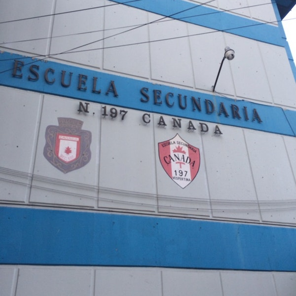
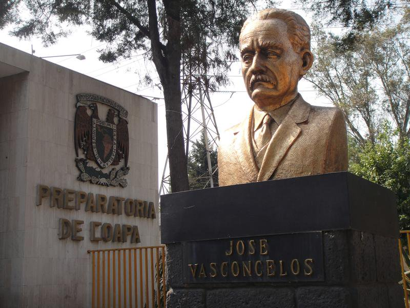
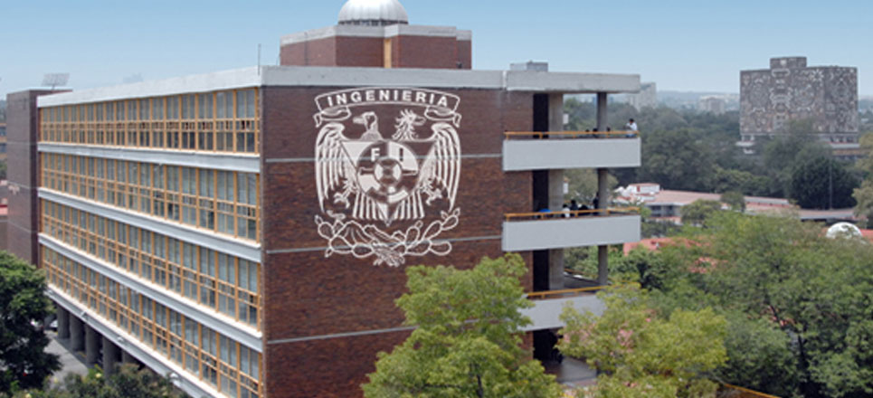

Estudié 3 años en la escuela secunadaria 197 Canadá
Después estuve 3 años en la mejor escuela de mi vida, la Preparatoria No. 5 "José Vasconcelos". Ahí conocí gente increíble. También descubrí mis gustos académicos. Lo que me hizo escoger ingeniería
Actualmete llevo 3 semestre en la facultad de Ingeniería, puedo decir que he aprendido muchísimo aunque tomó un poco de tiempo acostumbrarme. Espero seguir estable en la carrera y terminarla pronto XD.
